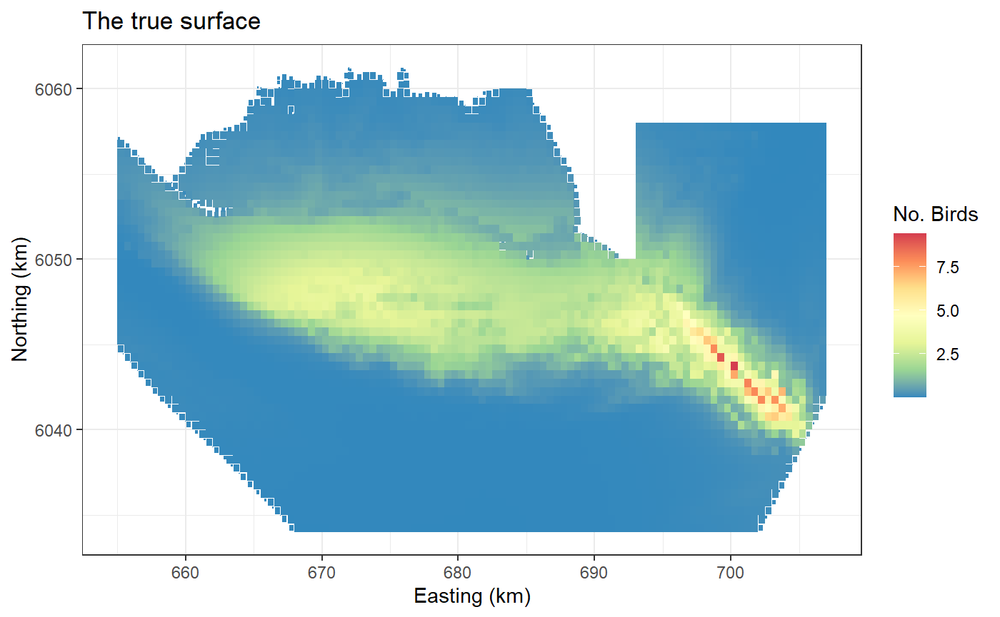
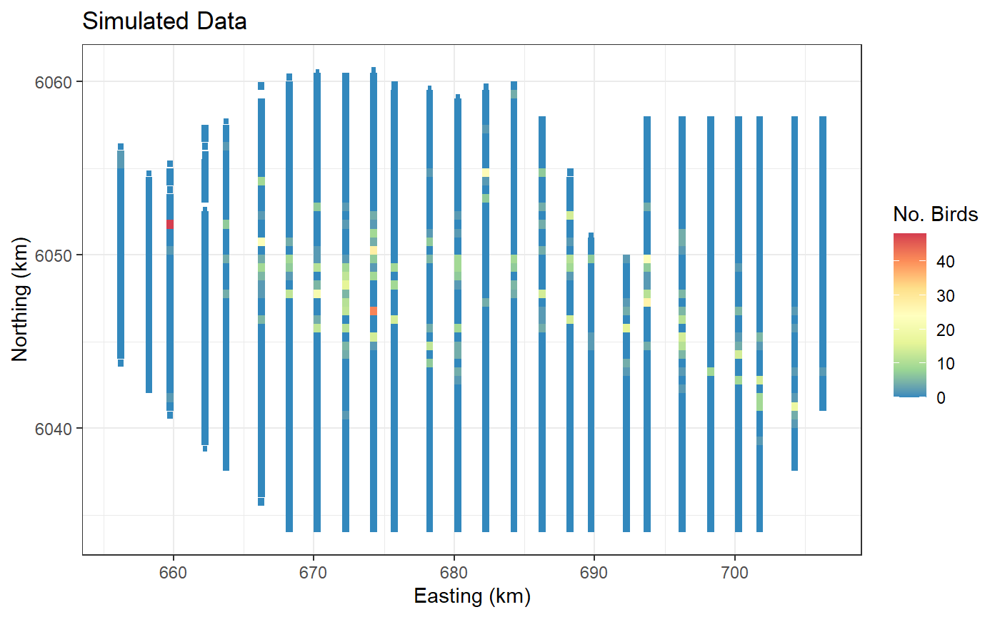
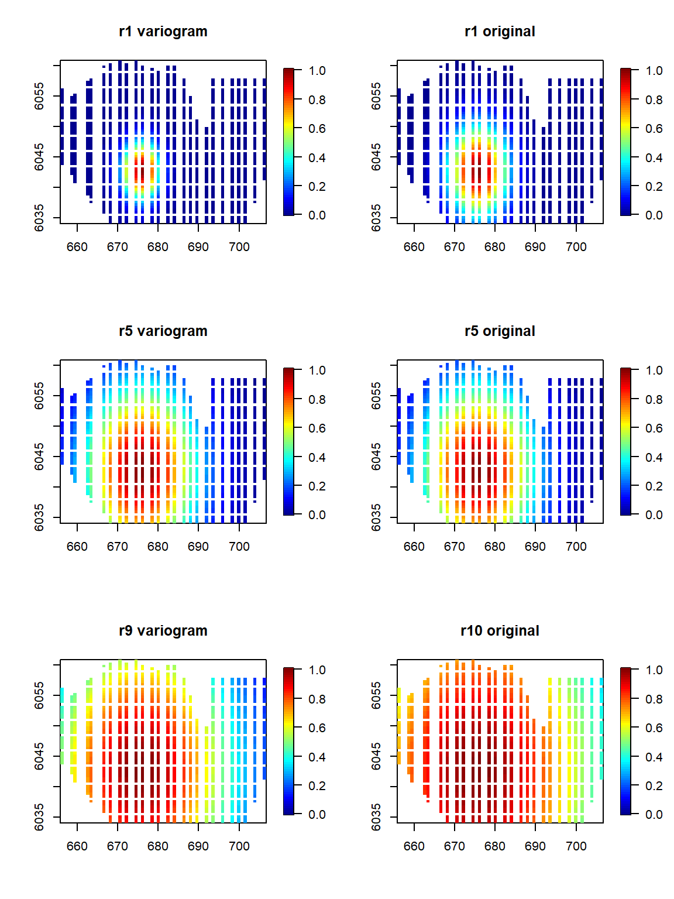
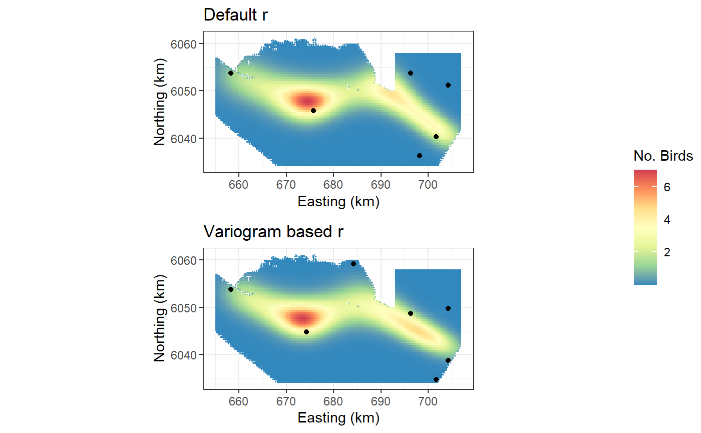

User specified range parameters
Lindesay Scott-Hayward
2024-05-08
Source:vignettes/web/UserRadiiChoice_MRSea.Rmd
UserRadiiChoice_MRSea.RmdIntroduction
This vignette describes how the user may specify their own choices or choices driven by a variogram for the range parameter. This may be necessary on occasions where the data is very patchy.
Note that this page shows an example of the use of the variogram method for choosing a sequence of \(r\) parameters. No effort has been made to model this data in the best way possible.
Fitting a model
The data we shall use for this example is from a Danish offshore
windfarm and is part of the MRSea package. The data are
counts of birds collected along transects over a number of surveys and
years. In this first example, we will use all of the data together and
assess if there is a relationship between number of birds and sea
depth.
# load the data
data("nysted.analysisdata")
wfdata <- filter(nysted.analysisdata, impact==0, season==1)
# load the prediction grid
data("nysted.predictdata")
preddata <- filter(nysted.predictdata, impact==0, season==1)
ggplot(preddata) + geom_tile(aes(x=x.pos, y=y.pos, fill=truth.re, height=sqrt(area), width=sqrt(area))) +
scale_fill_distiller(palette = "Spectral",name="No. Birds") +
xlab("Easting (km)") + ylab("Northing (km)") + theme_bw() +
ggtitle("The true surface")
ggplot(wfdata) + geom_tile(aes(x=x.pos, y=y.pos, fill=response, height=sqrt(area), width=sqrt(area))) +
scale_fill_distiller(palette = "Spectral",name="No. Birds") +
xlab("Easting (km)") + ylab("Northing (km)") + theme_bw() +
ggtitle("Simulated Data")
Fitting a 2D smooth
Set up the initial model with the offset term (if required) and specify the parameters required. Here we add an offset to be the size of the segment associated with the bird counts. In reality, our bird counts are over a particular area so we have counts per unit area. The initial model contains the offset information, and specifies the family of model.
Set up for the 2D smooth:
- Create the knot grid. Here we select 300 space-filled locations from our data.
set.seed(123)
knotgrid<- getKnotgrid(coordData = cbind(wfdata$x.pos, wfdata$y.pos),
numKnots = 300,
plot = FALSE)- Calculate the distances between the knot points and all data points and also the distances between all the knots.
- Next we specify some additional parameters needed to run the SALSA2D algorithm:
- a fit statistic
- min, max and start knots.
- gap
- In addition we can (optionally) add a parameter
r_seqwhich is a sequence of range/radii values determining the influence of each basis function. This is the \(r\) parameter in the basis function.
The model initialises with the central value of this \(r\) sequence. If r_seq is not
specified then the model will choose the range parameters using the
existing getRadiiChoices() function. Using this function
with 10 choices selected and specifying it in salsa2dlist
is the equivalent of not specifying it at all and letting
runSALSA2D calculate them.
(rs.orig <- getRadiiSequence(method = "original",
numberofradii = 10,
distMatrix = distMats$dataDist,
basis = "gaussian"))
#> [1] 0.13494303 0.11445820 0.09708303 0.08234548 0.06984514 0.05924239
#> [7] 0.05024919 0.04262118 0.03615113 0.03066326
#> attr(,"Method")
#> [1] "Original"
# make parameter set for running salsa2d
salsa2dlist<-list(fitnessMeasure = 'QBIC',
knotgrid = knotgrid,
startKnots = 10,
minKnots = 4,
maxKnots = 15,
gap = 0,
r_seq = rs.orig) ##Alternatively using a variogram to choose radii
- Fit a variogram to the location and response data using the
gstatpackage forR(Pebesma 2004). - Use a spherical model to find the range parameter (the distance where response values are considered no longer correlated)
- Use this as the central value for the sequence (the value the
gamMRSeamodel will initialise on) - Create a sequence of values to allow for more local and more global
bases. This is based on the lags chosen by the function
gstat::variogram.
rs <- getRadiiSequence(method = "variogram",
numberofradii = 10,
xydata = wfdata[, c("x.pos", "y.pos")],
response = log(wfdata$NHAT + 1),
basis = "gaussian",
distMatrix = distMats$dataDist)
rs
#> [1] 0.21110373 0.14048068 0.10526509 0.08416634 0.07011323 0.06008152 0.05256114
#> [8] 0.04671397 0.04203751
#> attr(,"Method")
#> [1] "Variogram"
#> attr(,"vg.fit")
#> model psill range
#> 1 Nug 0.2903582 0.00000
#> 2 Sph 0.2298275 10.08521The sequence of \(r\)’s in the
rs object also contains a table as part of the attributes.
This shows the variogram model fit and the range parameter used as the
central point of the sequence. In this case, the range parameter is
10.09 which suggests on average, the spatial correlation decays after
approximately 10km.
Visualising the bases:
To have a look at the two methods (the default vs the variogram) we can look at how the min, max and middle bases of the sequence appear. Note that the variogram method will always have an odd length sequence owing to the sequence being based on the middle value.
par(mfrow=c(3,2))
b1 <-LRF.g(radiusIndices = 1, dists = distMats$dataDist, radii = rs, aR = 149)
fields::quilt.plot(wfdata$x.pos, wfdata$y.pos, b1, zlim=c(0,1), main="r1 variogram")
b1.orig <-LRF.g(radiusIndices = 1, dists = distMats$dataDist, radii = rs.orig, aR = 149)
fields::quilt.plot(wfdata$x.pos, wfdata$y.pos, b1.orig, zlim=c(0,1), main="r1 original")
b5 <-LRF.g(radiusIndices = 5, dists = distMats$dataDist, radii = rs, aR = 149)
fields::quilt.plot(wfdata$x.pos, wfdata$y.pos, b5, zlim=c(0,1), main="r5 variogram")
b5.orig <-LRF.g(radiusIndices = 5, dists = distMats$dataDist, radii = rs.orig, aR = 149)
fields::quilt.plot(wfdata$x.pos, wfdata$y.pos, b5.orig, zlim=c(0,1), main="r5 original")
b9 <-LRF.g(radiusIndices = 9, dists = distMats$dataDist, radii = rs, aR = 149)
fields::quilt.plot(wfdata$x.pos, wfdata$y.pos, b9, zlim=c(0,1), main="r9 variogram")
b10.orig <-LRF.g(radiusIndices = 10, dists = distMats$dataDist, radii = rs.orig, aR = 149)
fields::quilt.plot(wfdata$x.pos, wfdata$y.pos, b10.orig, zlim=c(0,1), main="r10 original")
There is not a huge difference with the original here but the variogram method suggests slightly smaller bases in general.
Note that if the variogram method selects a small range compared with the size of the distances available in your surface then the model may support many more knots. In this case you might consider starting with a larger number.
Fitting the models:
Let’s have a look at the modelling differences. First the original parametrisation.
# make parameter set for running salsa2d
salsa2dlist<-list(fitnessMeasure = 'QBIC',
knotgrid = knotgrid,
startKnots = 10,
minKnots = 4,
maxKnots = 15,
gap = 0,
r_seq = rs.orig) ##
salsa2dOutput.origr <- runSALSA2D(model = initialModel,
salsa2dlist = salsa2dlist,
d2k=distMats$dataDist,
k2k=distMats$knotDist,
suppress.printout = TRUE)
salsa2dOutput.origr <- salsa2dOutput.origr$bestModel- Change out the \(r\) sequence for the variogram method.
salsa2dlist$r_seq <- rs
salsa2dOutput.vario <-runSALSA2D(model = initialModel,
salsa2dlist = salsa2dlist,
d2k=distMats$dataDist,
k2k=distMats$knotDist,
suppress.printout = TRUE)
salsa2dOutput.vario <- salsa2dOutput.vario$bestModelAssessment of outputs
# radius indices
salsa2dOutput.origr$splineParams[[1]]$radiusIndices
#> [1] 4 5 5 5 5 5
salsa2dOutput.vario$splineParams[[1]]$radiusIndices
#> [1] 4 4 4 4 4 4 4
# CV scores
cv.gamMRSea(wfdata, salsa2dOutput.origr, K=10, s.eed=154)$delta[2]
#> [1] 10.05107
cv.gamMRSea(wfdata, salsa2dOutput.vario, K=10, s.eed=154)$delta[2]
#> [1] 10.03927The variogram method
- chose one more knot and similar indexes (smaller radii than the equivalent index from the default method)
- has a lower, and therefore better, CV score than the default.
Predictions
preddist<-makeDists(cbind(preddata$x.pos, preddata$y.pos),
knotgrid, knotmat=FALSE)$dataDist
# make predictions on response scale
preds.orig<-predict(newdata = preddata,
g2k = preddist,
object = salsa2dOutput.origr)
preds.vario<-predict(newdata = preddata,
g2k = preddist,
object = salsa2dOutput.vario)- Predictions from both models. The following plots show the model predictions and the locations of each of the knots.
a <- ggplot(preddata) +
geom_tile(aes(x=x.pos, y=y.pos, fill=preds.orig, height=sqrt(area), width=sqrt(area))) +
scale_fill_distiller(palette = "Spectral",name="No. Birds") +
xlab("Easting (km)") + ylab("Northing (km)") + theme_bw() +
coord_equal() +
geom_point(data=data.frame(knotgrid[salsa2dOutput.origr$splineParams[[1]]$knotPos,]), aes(X1, X2))+
ggtitle("Default r")
b <- ggplot(preddata) +
geom_tile(aes(x=x.pos, y=y.pos, fill=preds.vario, height=sqrt(area), width=sqrt(area))) +
scale_fill_distiller(palette = "Spectral",name="No. Birds") +
xlab("Easting (km)") + ylab("Northing (km)") + theme_bw() +
coord_equal()+
geom_point(data=data.frame(knotgrid[salsa2dOutput.vario$splineParams[[1]]$knotPos,]), aes(X1, X2)) +
ggtitle("Variogram based r")
ggpubr::ggarrange(a,b, common.legend = TRUE, ncol = 1, legend = "right")
Links between the range from the variogram and the range parameter in the RBF’s:
- The Gaussian RBF is defined in (Scott-Hayward et al. 2022) as:
\[e^{-(d*r)^2}\]
but may equally be presented as: \[e^{-(d⁄(2\sigma^2))}\] In this latter equation, σ represents the range parameter and so the link to the \(r\) parameter is: \(r= \sqrt{2}\sigma\)
- The exponential RBF is defined in (Scott-Hayward et al. 2015) as: \[e^{(d⁄r^2)}\] It may also be presented as \[e^{(d⁄V)}\]
In this case, \(V\) represents the range parameter and so the link to the \(r\) parameter is \(r=\sqrt{V}\)
In the models fitted here, the range parameter was found to be 10 indicating that on average there ceased to be spatial correlation after approximately 10 km.